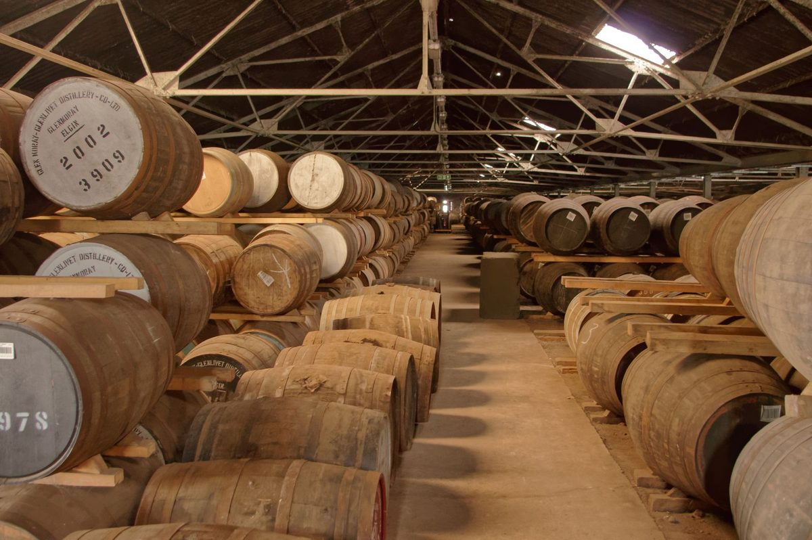
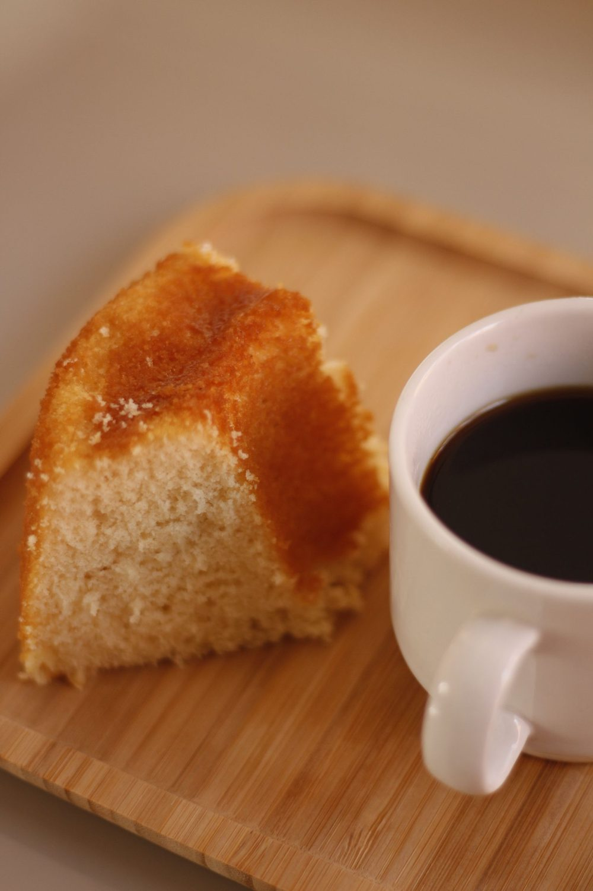

이란 카발란 양조장, 입장권부터 케이크 카페까지 반나절 코스는?
무료로 둘러보던 곳이 유료가 됐지만 표값은 그대로 시음이나 기념품으로 돌려쓸 수 있어요.
게시
"카발란 양조장, 이제 돈 내고 들어가야 하나요?" 맞아요. 카발란 양조장(噶瑪蘭威士忌酒廠)은 2026년 3월 1일부터 입장권을 받고 있어요. 이란현 위안산향 위안산로 2단 326번지에 있고, 이란 시내에서 버스나 택시로 갈 수 있어요. 공식 홈페이지의 입장권·투어·교통 안내와 카페 공식 공지를 바탕으로 반나절 코스를 정리해봤어요.
01 · 카발란 양조장 입장권 한눈에 보기
| 요금 | 대상 | |
|---|---|---|
| 일반 | NT$200 | 일반 방문객 |
| 우대 | NT$100 | 중·고등학생, 이란현 주민, 65세 이상(증빙 필요) |
| 무료 | NT$0 | 12세 이하 어린이, 장애인(동반 1인 포함) |
입장권 금액은 경내 시음 체험과 상품 구매에 전액 차감할 수 있어요(2026년 10월 기준). 영업시간은 방문 전 구글맵에 등록된 영업시간을 확인하세요.
02 · 카발란 한국어 투어는 매일 14:00
입장권 먼저 무료 가이드 투어는 입장권을 산 뒤 참여해요. 한국어는 매일 14:00, 중국어 10:00·16:00, 영어 11:00, 일본어 13:00이에요(2026년 10월 기준).
홈페이지에서 등록 정해진 시간에 정해진 장소로 모이는 방식이라 공식 홈페이지 예약 페이지 아래쪽 양식으로 미리 등록해두면 편해요. 인원이 80명을 넘으면 음성 안내로 바뀔 수 있어요.
약 60분 코스 홍보 영상, 증류 공장 견학, 1층 유료 시음 구역·기념품점 순서로 돌아요. 술을 마신 뒤에는 공장 견학을 할 수 없으니 시음은 투어 뒤로 미루세요.

03 · 이란역에서 카발란 가는 법
| 타는 곳 → 내리는 곳 | 참고 | |
|---|---|---|
| 752번 버스(宜蘭勁好行) | 이란 버스터미널(宜蘭轉運站) → 員山農會成功分部 | 도보 5분, 돌아올 땐 金車酒廠 정류장 |
| 1786번 버스(國光客運) | 이란 버스터미널 → 下深溝 | 도보 10분 |
| 택시 | 이란역·버스터미널 앞 | 15~20분, 약 NT$250~300(2026년 10월 기준) |
시음을 할 계획이라면 차를 빌리지 말고 버스나 택시로 다녀오세요.
04 · 돌아오는 길, 이란 케이크 카페
양조장을 보고 이란 시내로 돌아왔다면 케이크 카페 花轟小姐(Cake.Coffee.Dessert)에 들러볼 만해요. 이란점은 이란시 타이산로(泰山路) 285번지에 있고, 2026년 10월 자오시점(礁溪鄉 中山路一段 225號)도 문을 열었어요.
예약 없이 현장 대기 예약은 받지 않고, 6세 이상은 1인 음료 1잔이 최소 주문이에요.
대기 손님이 있으면 90분 기다리는 사람이 있으면 이용 시간이 90분으로 제한돼요.
늦게 가면 아쉬울 수 있어요 디저트는 매일 바뀌고 일찍 다 팔리면 일찍 닫아요. 휴무일은 공식 페이스북·인스타그램에 올라오니 방문 전 구글맵에 등록된 영업시간도 확인하세요.

"투어 먼저, 시음은 나중에, 디저트는 마지막에." — 공식 안내를 바탕으로 정리한 반나절 코스 요약입니다.
이란에서 더 먹을 곳을 찾는다면 이란 맛집 지도를 열어보세요. 이란 카페 맛집에 花轟小姐가 등록돼 있고, 출출할 땐 여행자가 올린 이란 노점 柯氏蔥油餅도 있어요. 이란을 여행지로 넣을지 고민 중이라면 타이베이 말고 어디 갈까 글도 함께 보세요.
지도에서 이란 카페를 찾아보세요
양조장 전후로 들르기 좋은 이란 카페를 지도에서 확인해보세요.